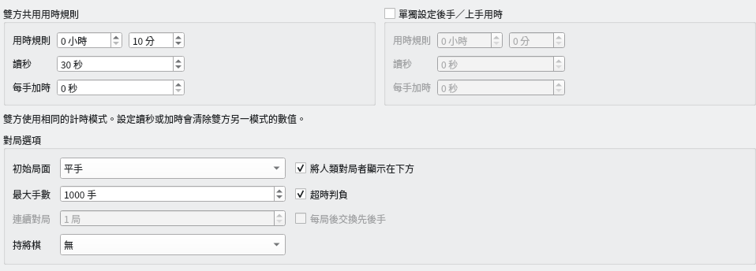
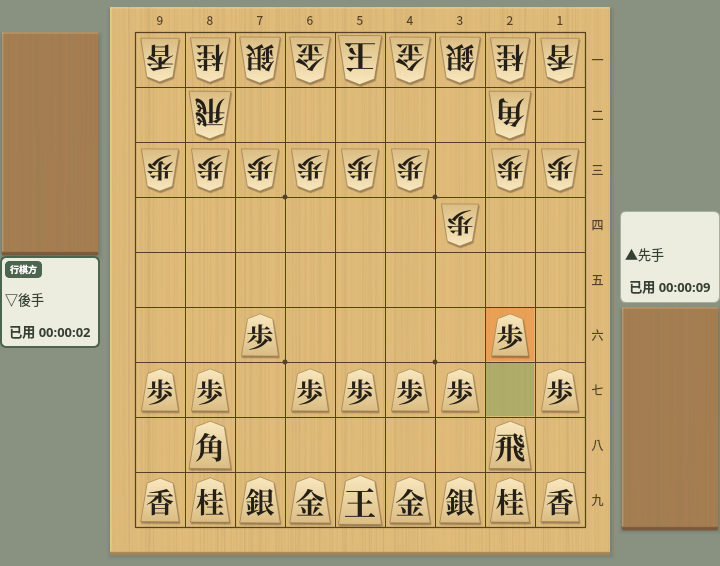
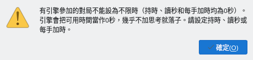
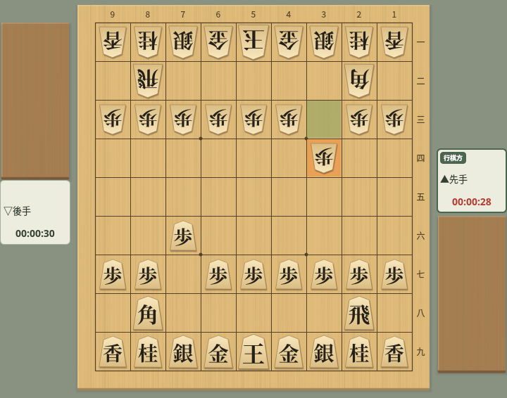

用時與時鐘
介紹對局對話方塊中的用時設定，以及對局中時鐘的走法
截圖於 Linux 上以繁體中文介面擷取。
用時設定
在對局對話方塊中設定持時、讀秒與每手加時
從選單「對局」→「對局…」開啟對局對話方塊，用時設定位於對話方塊中段。所有時間都是每位對局者各自的時間。
- 用時規則（持時）：整局可以使用的基本時間，以小時與分鐘指定。
- 讀秒：持時用完後，每一手可以使用的秒數。未用完的秒數不會留到下一手。
- 每手加時：費雪制的加時。第一手以及之後每走一步，都會把這個秒數加到剩餘時間中。未用完的時間會累積。
- 單獨設定後手／上手用時：不勾選時，左側的數值同時用於先後雙方（標題為「雙方共用用時規則」）。勾選後，可以在右側單獨設定後手／上手的用時，左側標題會變為「先手／下手用時規則」。
- 超時判負（位於「對局選項」中）：勾選時，用完可用時間的一方超時判負。不勾選時，即使時間用完也可以繼續對局。


用時設定：持時 10 分鐘＋讀秒 30 秒（雙方共用）
先後雙方使用同一種方式。在任一方的讀秒中輸入數值，雙方的加時都會變為 0；輸入加時，雙方的讀秒都會變為 0。對話方塊中的提示「雙方使用相同的計時模式。設定讀秒或加時會清除雙方另一模式的數值。」就是這個意思。不能設定為先手讀秒、後手加時。
為先後設定不同的用時時，可以分別設定的也只是持時、讀秒長度與加時長度，方式仍然相同。
先後用時不同的對局，對局資訊和棋譜的「用時規則」會同時記錄雙方，例如「先手 10:00+30 / 後手 05:00+30」（讓子對局為下手、上手）。引擎之間的連續對局中勾選「每局後交換先後手」時，用時也會隨引擎一起交換，各引擎每局都使用相同的用時。
讀秒與加時的計時方式
設定的時間在對局中如何減少、如何增加
只有輪到走棋的一方消耗時間，走棋後不會增加時間。持時用完即為超時。例如持時 5 分鐘時，時鐘從「00:05:00」開始，第一手用 3 秒走棋後剩餘「00:04:57」。
持時剩餘期間，從持時中扣除。如果在思考途中用完持時，就從這一手的中途進入讀秒，之前思考的時間也計入消耗。
進入讀秒後，只要在讀秒秒數用完前走棋，下一手仍有相同的秒數。未用完的秒數不會累積。達到讀秒秒數的那一刻即為超時（讀秒 30 秒時，須在滿 30 秒之前走棋）。持時設為 0 時，從第一手起就是每手 30 秒這樣的對局。
對局開始時，會把第一手的加時加到持時中。之後，每在時限內走一步，就會加上下一手的加時。對方走棋不會增加自己的時間。
| 設定與操作 | 剩餘時間 |
|---|---|
| 以持時 0 秒、每手加時 10 秒開始 | 10 秒 |
| 第一手用 3 秒走棋 | 10 − 3 + 10 = 17 秒 |
| 自己的下一手用 5 秒走棋 | 17 − 5 + 10 = 22 秒 |
| 以持時 5 分鐘、每手加時 10 秒開始 | 5 分 10 秒 |
不限時
把持時、讀秒與加時全部設為 0 秒，就可以不必在意時間
先後雙方的持時、讀秒與每手加時全部為 0 秒時，就是不限時對局。即使勾選「超時判負」，也不會超時判負。
只有人對人對局可以不限時。有引擎參加的對局無法開始，詳見下方的無法開始對局的設定。
不限時對局中，時鐘顯示的不是剩餘時間，而是各自已用時間的合計，例如「已用 00:00:09」。輪到自己走棋時，這一手的思考時間也會計入。走棋後的數值與棋譜欄「用時」的合計相同。


不限時：時鐘顯示各自已用時間的合計（先手 9 秒、後手 2 秒）
不足 1 秒的部分捨去。也不使用表示時間不足的警告顏色。
無法開始對局的設定
某些用時設定在按下「開始對局」時會顯示警告
使用以下設定按下「開始對局」時，會顯示「用時規則」警告，對局不會開始。對話方塊會保持開啟，請重新設定時間後再次按下「開始對局」。顯示警告時，不會儲存設定。
| 設定 | 警告內容與修改方法 |
|---|---|
| 只有一方的持時、讀秒與加時全部為 0 秒（勾選「單獨設定後手／上手用時」時） | 不能只讓一方不限時。請為雙方設定用時。人對人對局時，把雙方都設為 0 秒即可不限時對局。 |
| 有引擎參加的對局中，先後雙方的持時、讀秒與加時全部為 0 秒 | 引擎會把可用時間當作 0 秒，幾乎不加思考就落子，因此不能不限時。請設定持時、讀秒或每手加時。 |


有引擎參加的對局設為不限時並開始時顯示的警告
第一次開啟對局對話方塊時，時間全部為 0 秒；如果已註冊引擎，後手／上手會設為該引擎。直接按下「開始對局」會顯示這個警告，請先設定持時或讀秒。設定的時間下次也會沿用。
時鐘顯示
在棋盤旁的對局者卡片上，以「時:分:秒」顯示時鐘
有時間限制的對局中，時鐘顯示剩餘時間。只有輪到走棋一方的時鐘會走動。不足 1 秒的部分進位顯示，例如剩餘 7.2 秒顯示為「00:00:08」，變為「00:00:00」時即為超時。
讀秒對局進入讀秒後，顯示讀秒的剩餘秒數。進入讀秒後，在對方走棋期間，時鐘也顯示下一手可用的讀秒秒數（讀秒 30 秒時為「00:00:30」）。持時為 0 秒的讀秒對局從一開始就這樣顯示。網路對局（CSA）也一樣。
輪到走棋一方的時鐘，在時間不足時文字顏色會改變。
- 沒有讀秒的對局：剩餘 10 秒以內時變為「剩餘 10 秒以內的文字」的顏色，剩餘 5 秒以內時變為「讀秒中／剩餘 5 秒以內的文字」的顏色。
- 有讀秒的對局：持時剩餘 10 秒以內時變為「剩餘 10 秒以內的文字」的顏色，進入讀秒後變為「讀秒中／剩餘 5 秒以內的文字」的顏色。


讀秒中：輪到走棋一方的時鐘顯示為警告顏色
兩種顏色都可以在對局外觀的「詳細設定」分頁中變更。不限時對局中顏色不會改變。
中斷對局後時鐘會停止，選擇「繼續」後從中斷時的剩餘時間接著計時（對局的中斷與繼續）。
輪到自己走棋時，選擇「對局」→「悔棋」會撤回自己的著法和對方的應著，時鐘也會回到開始思考被撤回的那一手時的狀態。被撤回的著法所用的時間，以及對方應著後思考的時間都會退還，思考時間從選擇「悔棋」的那一刻重新計算。繼續選擇時每次再退回兩手，最多可以退回到對局的初始局面。